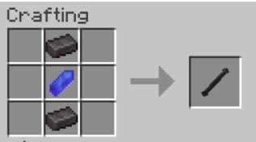

Ancient sith melee weapon, later used by jedi guardians. Still WIP. Will have its own combat system in the next update.
Contents
Obtaining
The only way to obtain this item as of 0.0.2 is by crafting.crafting
Usage
Activating
To activate the item press [SHIFT + RMB]. Same can be done to turn it off. If a player throws (or fatfingers [Q]) an active saber from their mainhand it automatically turns off.Attacking
When the item is active, it does 16hp of damage when left-clicked on an entity (or player). However like any other saber item, this can be countered via Blocking.Blocking
Saber Pike, like any other saber item, when right-clicked, will block any damage coming from a saber item.History
| 0.0.2 | Introduced. |